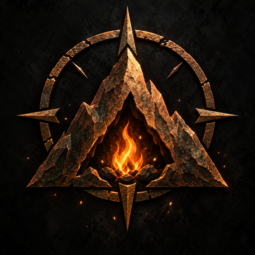
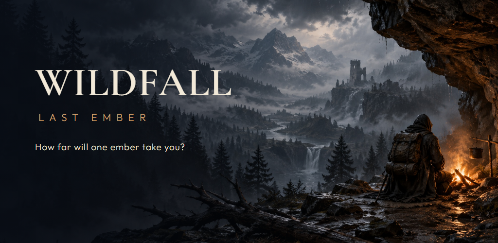

ENGLISH LAUNCH KIT
WILDFALL: Last Ember
One valley. Eight stories. A reason to survive.
36 seconds · 1080p · Actual gameplay · Nature ambience and physical SFX · No music
Feature graphic


One valley. Eight stories. A reason to survive.
36 seconds · 1080p · Actual gameplay · Nature ambience and physical SFX · No music
